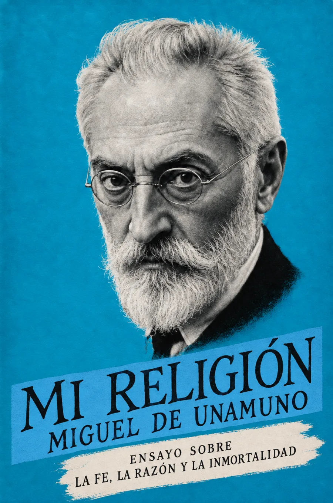

Audiolibros · Cuarta Ola
Miguel de Unamuno / Ensayo / 1907
Mi
religión
Creer como quien busca.
Una conciencia que no se deja encasillar.
Una pregunta que se resiste a descansar.
Escuchar una conciencia en movimiento.
Grabación próximamente
Volumen

Una fe que no se aquieta
Una pregunta llegada desde Chile abre el ensayo: ¿cuál es la religión de Unamuno? La respuesta rehúye la etiqueta. Su escepticismo no consiste en abandonar la búsqueda, sino en investigar sin convertir una fórmula en refugio.
El misterio no clausura el pensamiento: lo mantiene despierto.
Unamuno distingue la demostración racional del deseo de creer. Reconoce su inclinación afectiva al cristianismo, pero se resiste a los dogmas de una confesión particular. La lucha con Dios, evocada mediante Jacob, expresa esa tensión: perseverar importa más que alcanzar una certeza.
También explica su oficio de escritor. Quiere inquietar al lector, sacudir sus convicciones y suscitar pensamiento propio. Leemos así el ensayo como una invitación a sostener la pregunta, antes que como un catecismo de respuestas.
Texto fechado en Salamanca, el 6 de noviembre de 1907. Leer el ensayo · textos.info. La escena del estudio es una interpretación artística, no una reconstrucción de una habitación histórica.
La lectura
Ensayo completo
Una lectura continua, sin capítulos añadidos. Grabación próximamente.
Valoración

Bueno